大学笔记 | 概率论与数理统计
你能算出你入门的概率吗。
第一章 随机事件及其概率论¶
第一章总结（待完成）¶
$\S 1.1 $ 随机试验与随机事件¶
-
基本概念
- 我们通常用字母 \(E\) 表示一个随机试验。随机试验 \(E\) 的基本结果称为样本点，用 \(\omega\) 表示。称随机试验 \(E\) 的所有基本结果的集合为样本空间，用 $\Omega ={ \omega} $ 表示。
- 样本空间 \(\Omega\) 的部分子集称为随机试验 \(E\) 的随机事件 \(A\)，若试验结果 \(\omega \in A\)，则称事件 \(A\) 发生。
- 由一个样本点组成的事件称为基本事件。必然发生的事件称为必然事件，不可能发生事件称为不可能事件。
- 有限的样本点的空间称为有限样本空间，无限的样本点的空间称为无限样本空间。
-
事件关系
- 当 \(A\) 发生时 \(B\) 一定发生，则 \(B\) 包含事件 \(A\)，记作 \(A \subseteq B\)。
- 相互包含的事件称为事件相等，记作 \(A=B\)。
- \(A\)，\(B\) 不能同时发生称为互不相容。
- \(A\)，\(B\) 事件中必有一个发生且不能同时发生称为事件的互逆，它们是 互逆 / 对立 的。其中一个事件是另一个事件的逆事件。记作 \(\bar A = B\)。显然 \(\bar{\bar A} = A\)。
-
随机事件的运算
-
事件的交，说明两个事件中至少发生一个事件，又称为\(A\)，\(B\) 事件的并事件或和事件，记作 \(A \cup B\)。
-
事件的并，说明两个事件中都发生，又称为 \(A\)，\(B\) 事件的交事件或积事件，记作 \(A \cap B\)。
-
事件的差，事件 \(A\) 发生而 \(B\) 不发生，记作 \(A-B\)。
\[ A - B = A\bar B = A - AB \\ (A - B) \cup B = A \cup B \] -
集合的运算满足结合律，交换律，分配律。这里着重强调一下对偶率。写作 \(\bar{A \cup B} = \bar{A}\bar{B}\)，\(\bar{AB}=\bar A \cup \bar B\)。
-
-
几个常见结论 $$ A - B = A - AB = A \bar B \ A \cup B = A \cup (B-A) = A\cup(B - AB) \ A = A\Omega = A(B\cup \bar B) = AB\cup A\bar B $$
\(\S 1.2\) 随机事件的概率¶
-
频率 & 概率
-
频（概）率有非负性；对于必然事件，其频（概）率是 \(1\)；对于互不相容的事件，频（概）率具有可加性。
-
频率随试验次数的增加趋于稳定，其稳定值作为事件的概率。
-
对于任一事件，有 \(P(\bar A) = 1 - P(A)\)。
-
若 \(A \subseteq B\)，则有 \(P(B - A) = P(B) - P(A)\)。
-
对于任意事件，有 \(P(B - A) = P(B) - P(AB)\)。
-
对于任意事件，有 \(P(A \cup B) = P(A) + P(B) - P(AB)\)。
该公式推广到 \(n\) 的情况即是容斥定理。
-
-
古典概型
- 基本特点：样本空间只含有限个点且每个样本点的出现是等可能的。称为等可能概型，也称古典概型。
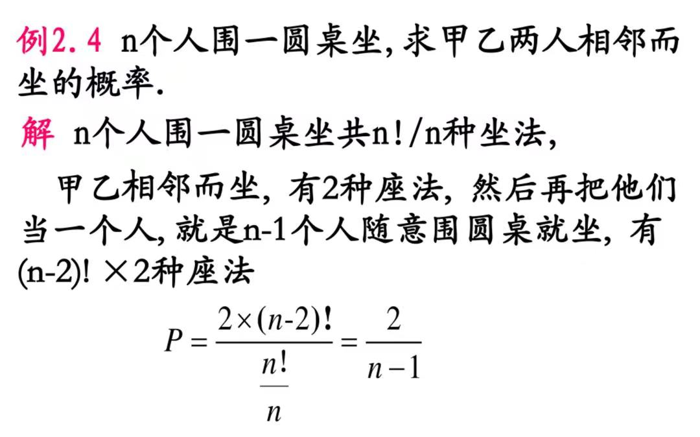
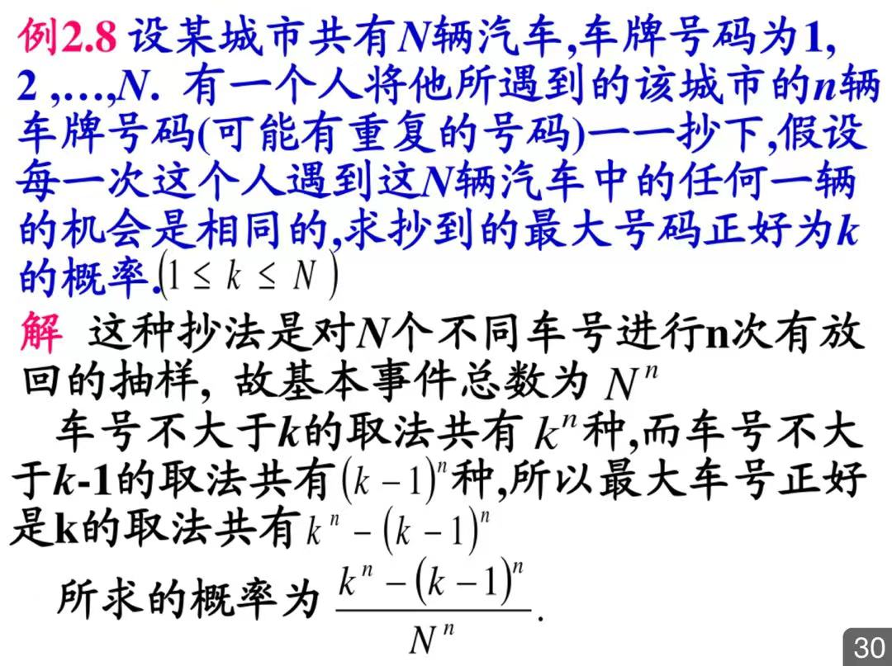
- 几何概型
\(P(A) = \dfrac{A 的度量}{\omega 的度量}\)
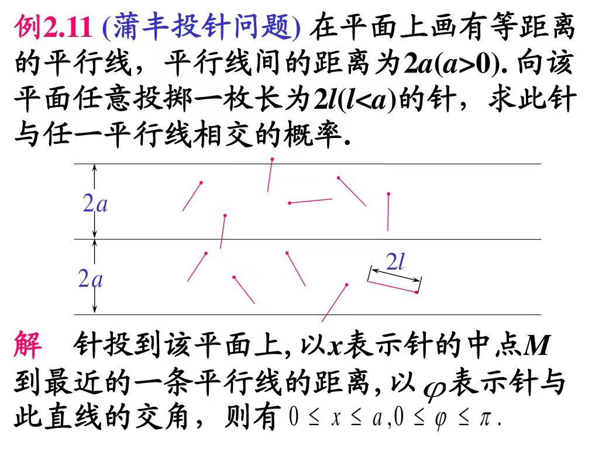
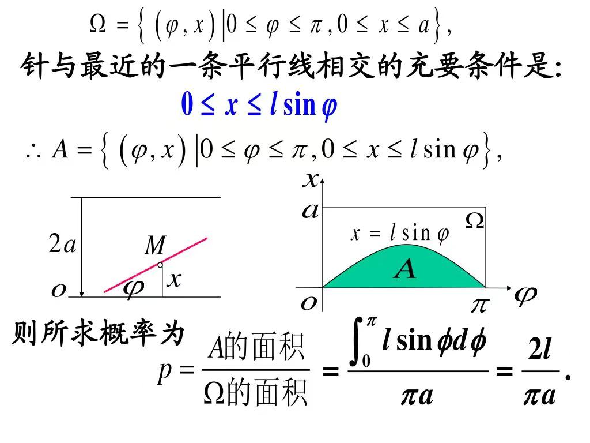
注意这里 \(x\) 的范围是 \([0, a]\)，所以不用考虑另外一条边。

分别设出第一段，第二段长度 \(x\)，\(y\)，然后找出 \(x\)，\(y\)，\(a\) 之间的关系，画出图像来求几何概率，答案为 \(\dfrac{1}{4}\)。

确定总事件数和符合的事件数是关键。
\(\S 1.3\) 条件概率¶
- 事件 A 在事件 B 发生下发生的概率是 \(P(B | A) = \dfrac{P(AB)}{P(A)}\)。
- 对于两两不相容事件，有 \(P((\bigcup_{i = 1}^{\infty}B_i) | A) = \sum_{i = 1} ^ {\infty}P(B_i | A)\)。
- 常见公式有 \(P(\Phi | A) = 0\) \(P(\bar B | A) = 1 - P(B | A)\) \(P((B_1 \cup B_2) | A) = P(B_1 | A) + P(B_2 | A) - P((B_1B_2) | A)\)
- 乘法公式 \(P(AB) = P(A | B)P(B) = P(B | A)P(A)\) 推广 \(P(ABC) = P(A)P(B | A)P(C | AB)\) \(P(A_1A_2 \dots A_n) = P(A_1)P(A_2 | A_1)P(A_3 | A_1A_2) \dots P(A_n | A_1A_2 \dots A_n)\)
- 全概率公式 若事件 \(A_1\)，\(A_2\)，\(\cdots\)，\(A_n\) 满足两两互不相容且 \(A_1 \cup A_2 \cup \dots A_n = \Omega\)，那么称 \(A_1\)，\(A_2\)，\(\cdots\)，\(A_n\) 为样本空间的一个分解或完全事件组。则对于事件 \(B\)，有 \(P(B) = \sum_{i = 1}^n P(B | A_i)P(A_i)\)。
- 贝叶斯公式 将乘法公式带入全概率公式可得 \(P(A_i | B) = \dfrac{P(B | A_i)P(A_i)}{\sum_{j = 1}^n P(B | A_j)P(A_j)}\)（分子表示 \(BA_i\) 发生的概率，分母表示 \(B\) 发生的概率）。 贝叶斯公式称为后验概率公式，其中为 \(P(A_i | B)\) 后验概率，\(P(A_i)\) 为先验概率。
\(\S 1.4\) 事件的独立性¶
-
若有事件 \(A\)，\(B\) 满足 \(P(AB) = P(A)P(B)\)，则称 \(A\)，\(B\) 相互独立。
那么此时则有 \(P(B | A) = P(B)\)，\(P(A | B) = P(A)\)。
特殊的，必然事件和不可能事件和其他任何事件都是相互独立的。
若 \(A\) 与 \(B\) 独立，那么 \(A\) / \(\bar A\) 与 \(B\) / \(\bar B\) 也相互独立。
注意事件的独立与互不相容不存在必然的关系。但在 \(P(A)\)，\(P(B)\) 都大于 \(0\) 的情况下，相互独立和不相容不能同时成立，因为
\[ P(AB) = P(A)P(B) > 0 \ne 0 \]\(A\)，\(B\) 独立时常用公式 $$ P(AB) = P(A)P(B) \ P(A \cup B) = P(A) + P(B) - P(A)P(B) \ P(A - B) = P(A) - P(A)P(B) $$
-
对于三个事件的独立性


-
推广到 \(n\) 个事件
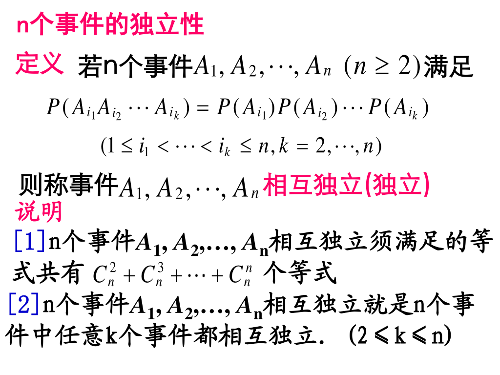

\(\S 1.5\) 伯努利概型¶
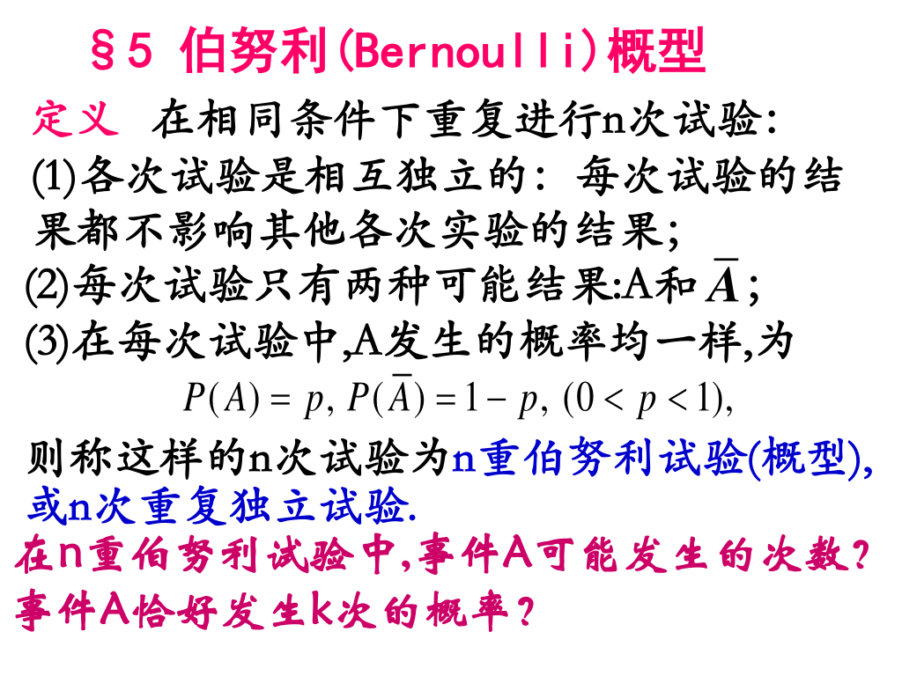

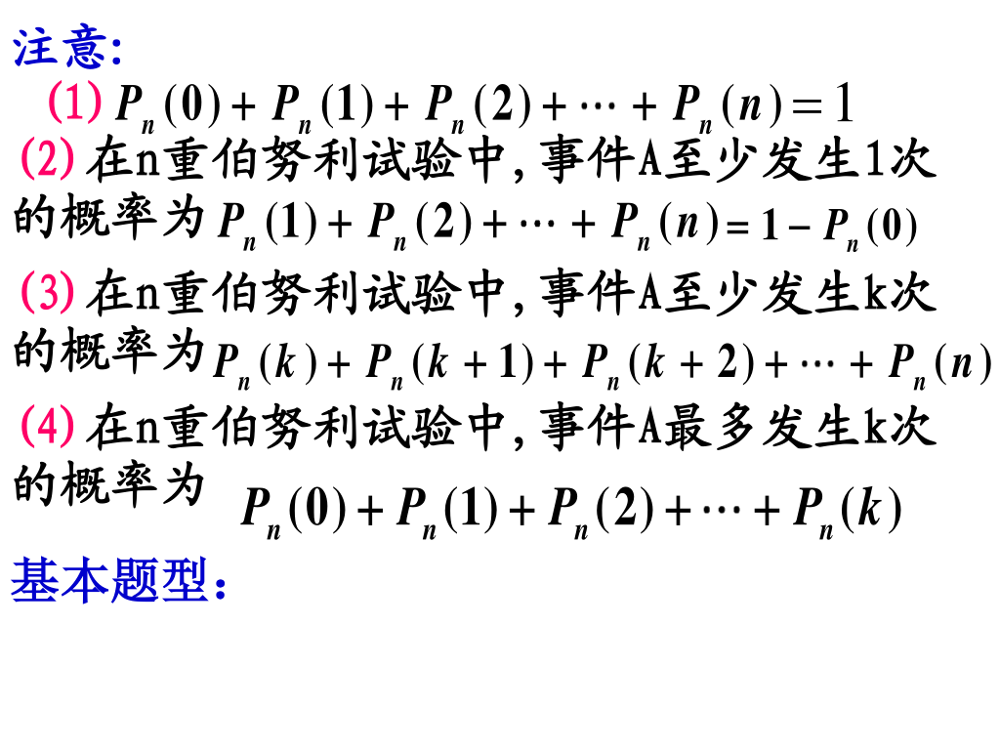
习题课（待完成）¶
1.1 $$ (A \cup B)(A \cup \bar B)(\bar A \cup B) $$
第二章 随机变量及其概率分布¶
第二章总结¶
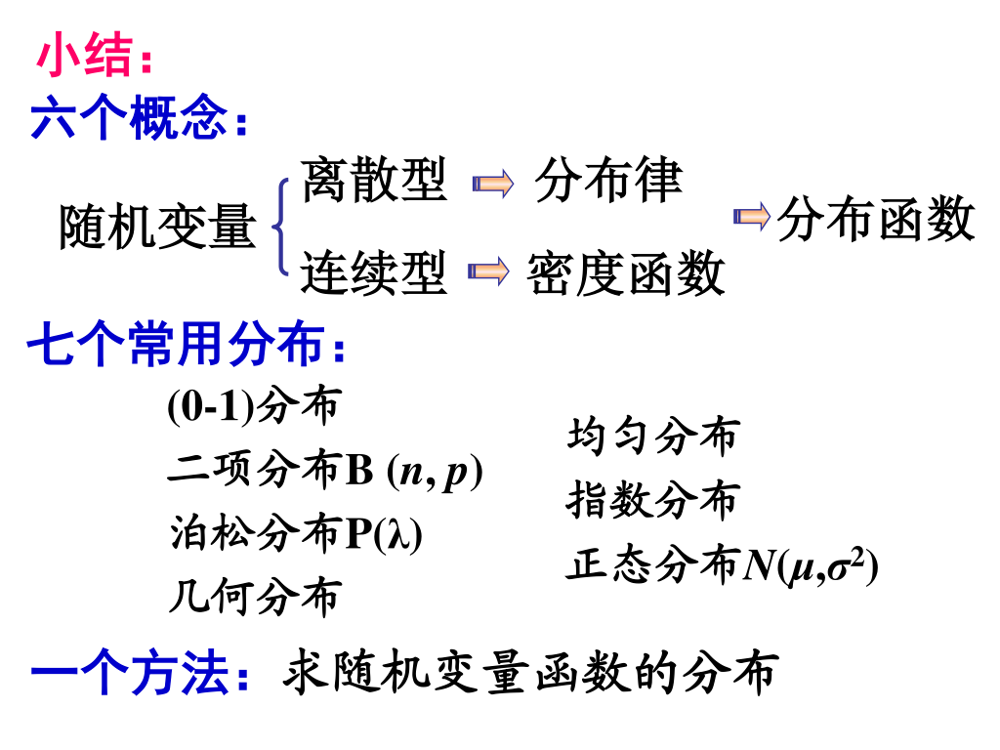
\(\S 2.1\) 随机变量及其分布函数¶
-
对于随机试验的样本空间 \(\Omega\)，若其中每一个样本点 \(\omega \in \Omega\)，都有一个实数 \(x\) 与其相对于，则称 \(X = X(\omega)\) 为随机变量。
-
设 \(X\) 是一随机变量， \(x\) 是任意实数，称 \(F(x) = P\{X \le x\},(-\infty < x < \infty)\) 为随机变量 \(X\) 的函数
\(F(x)\) 函数值分布在 \(0 \sim 1\) 之间，是单调不减的，且具有右连续性，\(F(x^+) = F(x)\)。
\(F(-\infty) = 0\)，\(F(\infty) = 1\)
\(P\{a < X \le b\} = F(b) - F(a)\)
\(\S 2.2\) 离散型随机变量及其概率分布¶
-
若随机变量 \(X\) 可取到的不同值是有限个或可列无限多个项，并且以确定的概率取这些值，则称 \(X\) 为离散型随机变量。
-

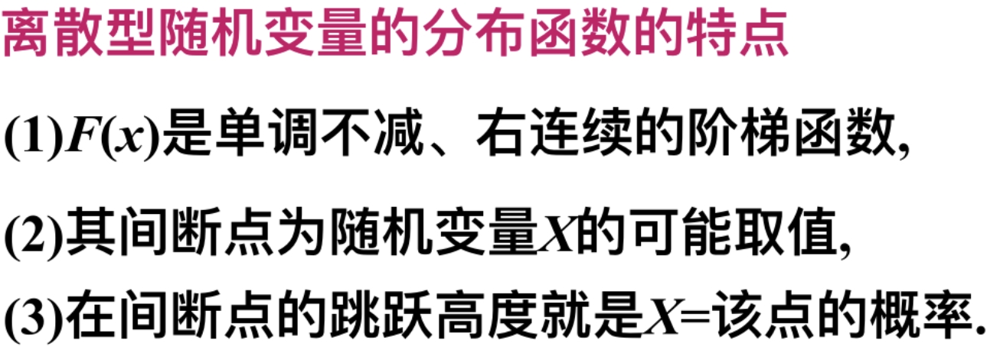

\(\S 2.3\) 连续型随机变量及其概率密度¶
- 与离散相对应的便是连续型。\(f(x)\) 是概率密度函数，简称概率密度，满足 \(F(x) = P\{X \le x\} = \int_{-\infty}^{x}f(t)dt\)。
值得注意的是，连续型的分布函数 \(F(x)\) 在 \((-\infty, +\infty)\) 但概率密度 \(f(x)\) 不一定连续，也不唯一。（注意，这里不唯一可以体现在，改变有限个 \(f(x)\) 点的取值，并不影响 \(F(x)\)）
-
概率密度 \(f(x)\) 性质
-
\(f(x) \ge 0\)
- \(\int_{-\infty}^{+\infty}f(x)dx = 1\)。
- \(P\{a < X \le b\} = F(b) - F(a) =\int_{a}^{b}f(x)dx\)。
- 在 \(f(x)\) 的连续点处满足 \(f(x) = F'(x)\)。
- \(P\{X = c\} = 0\)。这说明概率为 \(0\) 不一定是不可能事件，概率为 \(1\) 不一定是必然事件。
- $P{a < X < b} = P{a \le X < b} = P{a < X \le b} = P{a \le X \le b} $。
\(\S 2.4\) 几种常用的分布¶
几种常用的离散型随机变量
- （0 - 1）分布（两点分布）
若随机变量 \(X\) 的分布律为 \(P\{X = 1\} = p\)，\(P\{X = 0\} = 1 - p\) （\(0 < p < 1\)），则满足（0 - 1）分布。
- 二项分布
每次实验只有 \(A\) 和 \(\bar A\) 结果，独立实验 \(n\) 次，用 \(X\) 表示 \(n\) 次实验中 \(A\) 发生的次数，\(P\{x = k\} = C_{n}^{k}p^k(1 - p)^{n - k}\)，则称 \(X\) 服从参数为 \(np\) 的二项分布，记作 \(X \sim B(n, p)\)。

若 \((n + 1) \cdot p\) 是整数 \(m\)，则 \(P\{X = m\} = P\{X = m - 1\}\) 且在这两处可以取到最大值。
若 \((n + 1) \cdot p\) 不是整数，则令 $m = \left \lfloor (n + 1) \cdot p\right \rfloor $，在 \(P\{X = m\}\) 处可以取到最大值。
- 泊松（Poisson）分布
设 \(X\) 的所有可能取值为 \(0, 1, 2, \dots\)，并且 \(P\{X = k\} = \dfrac{\lambda^ke^{-\lambda}}{k!}(k = 0, 1, 2, \dots)\)，其中 \(\lambda > 0\)，则称 \(x\) 服从泊松分布，记作 \(X \sim P(\lambda)\) 或 \(X \sim \pi(\lambda)\)。
泊松定理：若满足 \(np_n = \lambda\)，则对任一固定的非负整数 \(k\)，有 \(\lim_{n \to \infty}C_{n}^{k}p_n^k(1 - p_n)^{n - k} = \dfrac{\lambda^ke^{-\lambda}}{k!}(k = 0, 1, 2, \dots)\)。（说明了二项分布与泊松分布的关系）
泊松定理说明，泊松分布是二项分布的极限分布，当 \(n\) 很大而 \(p\) 很小时，二项分布可近似看作参数 \(\lambda = np\) 的泊松分布。
- 几何分布
若某事件只有 \(A\) 和 \(\bar A\) 两种可能，且 \(P(A) = p,P(\bar A) = 1 - p\)，将事件独立重复发生直到出现结果 \(A\) 为止，\(X\) 表示所需试验的次数，则 \(P\{X = k\} = (1 - p)^{k - 1}p\)，称随机变量 \(X\) 服从几何分布，记作 \(X \sim G(p)\)。
- 超几何分布
随机变量 \(X\) 的分布律满足 \(P\{X = m\} = \dfrac{C_M^mC_{N - M}^{n - m}}{C_N^n}\)，则称 \(X\) 服从超几何分布。（可以理解为拿走不放回时的概率）
超几何分布的极限分布是二项分布，二项分布的极限分布是 Poisson 分布。
几种常用的连续型随机变量
- 均匀分布
若连续型随机变量 \(X\) 的概率密度函数为 \(f(x) = \begin{cases} \dfrac{1}{b - a} \ a < x < b\\ 0\ \ \ \ \ \ \ \ \ 其他\end{cases}\)，则称 \(X\) 在区间 \((a, b)\) 上服从均匀分布。
- 指数分布
若连续型随机变量 \(X\) 的概率密度函数为 \(f(x) = \begin{cases} \lambda e^{-\lambda x} \ x > 0\\ 0\ \ \ \ \ \ \ \ \ x \le 0\end{cases}\)，其中 \(\lambda > 0\) 是常数，则称 \(X\) 服从参数为 \(\lambda\) 的指数分布，记为 \(X \sim E(\lambda)\)。
- 正态分布
若连续型随机变量 \(X\) 的概率密度函数为 \(f(x) = \dfrac{1}{\sigma\sqrt{2\pi}}e^{-\dfrac{(x - \mu)^2}{2\sigma^2}}\)，其中 \(-\infty < \mu < +\infty, \sigma > 0\)，则称 \(X\) 服从参数为 \(\mu,\sigma\) 的正态分布，记作 \(X \sim N(\mu, \sigma^2)\)。

正态分布以 \(\mu\) 为中心，两边对称相等。其中 \(\mu\) 是位置参数，\(\mu\) 变大，图形右移，\(\mu\) 变小，图形左移（\(x = \mu\) 是对称中心）。\(\sigma\) 是形状参数，\(\sigma\) 变大，图形变平坦，\(\sigma\) 变小，图形变陡峭。
- 标准正态分布
若 \(X \sim N(\mu, \sigma^2)\) 且 \(\mu = 0, \sigma = 1\)，则称 \(x\) 服从标准正态分布，记为 \(X \sim N(0, 1)\)。此时概率密度 \(\varphi(x) = \dfrac{1}{\sqrt{2 \pi}}e^{-\dfrac{x^2}{2}}\)，分布函数 \(\Phi(x) = \int_{-\infty}^x \varphi(x)dx\)，且有 \(\Phi(x) + \Phi(-x) = 1\)。
若 \(X \sim N(\mu, \sigma^2)\)，则 \(Y = \dfrac{X - \mu}{\sigma} \sim N(0, 1)\)（正态分布与标准正态分布的关系）。这个关系可以将正态分布的概率计算化为标准正态分布来计算。


\(\S 2.5\) 随机变量的函数的分布¶
- 常规情况下直接按题意做即可，用一道例题简单说明。


- 特殊情况
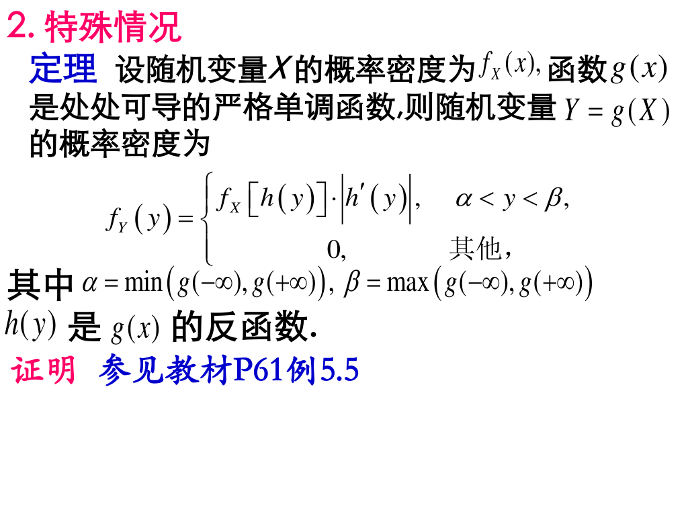
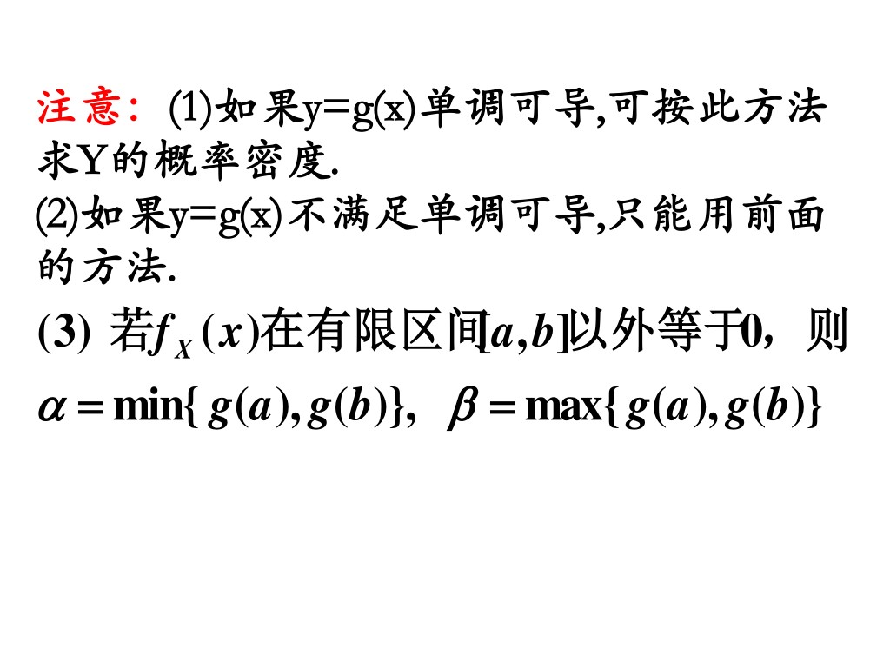
用一道例题具体说明一下该方法的使用

我们根据这种方法可以得出一个有关正态分布的结论：
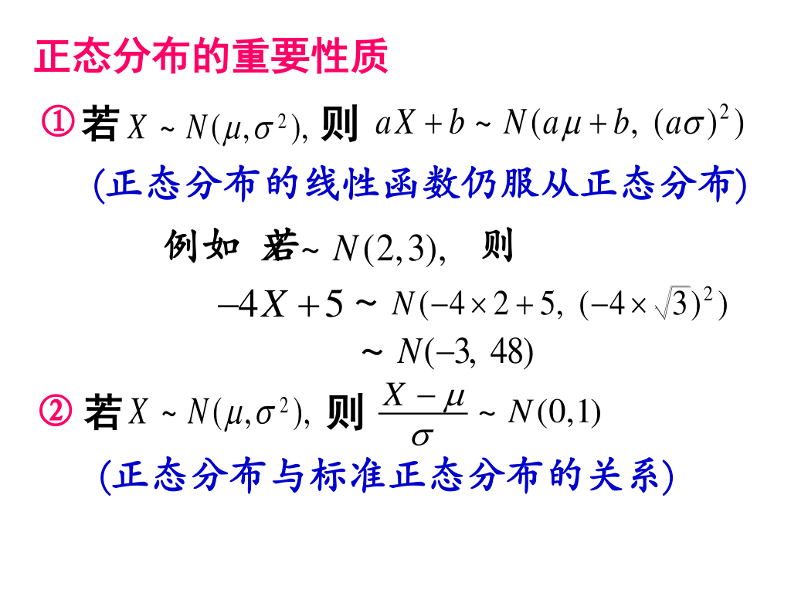
- 随机变量的函数分布的两种方法

习题课（待完成）¶
第三章 多维随机变量及其概率分布¶
\(\S 3.1\) 二维随机变量¶
- 二维随机变量


- 边缘函数
关于 \(X\) 的边缘分布函数 \(F_x(x) = \lim_{y \to +\infty} F(x, y)\)。关于 \(Y\) 的边缘分布函数 \(F_y(Y) = \lim_{x \to +\infty} F(x, y)\)。
若 \(F(x, y) = F_X(x) \cdot F_Y(y)\)，则说明 \(X\) 与 \(Y\) 相互独立。（类比 \(P(AB) = P(A)P(B)\)）
若 \(X, Y\) 不相互独立，联合函数 \(F(x, y)\) 可以确定两个边缘函数，但是两个边缘函数不能确定一个联合函数。若 \(X, Y\) 相互独立，联合分布函数能确定边缘分布函数，边缘函数也能确定联合函数。
\(\S 3.2\) 二维离散型随机变量及其概率分布¶
-
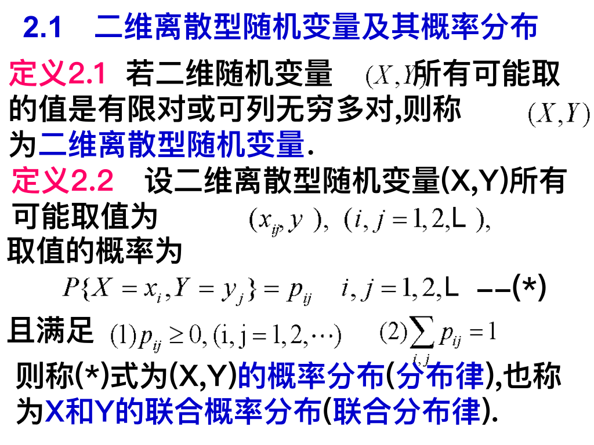
-
二维离散型随机变量边缘分布

- 二维离散型随机变量的独立性
若 \(p_{ij} = p_i \cdot p_j\)，则满足两事件相互独立。

\(\S 3.3\) 二维连续型随机变量及其概率分布¶


- 二维连续型随机变量边缘分布
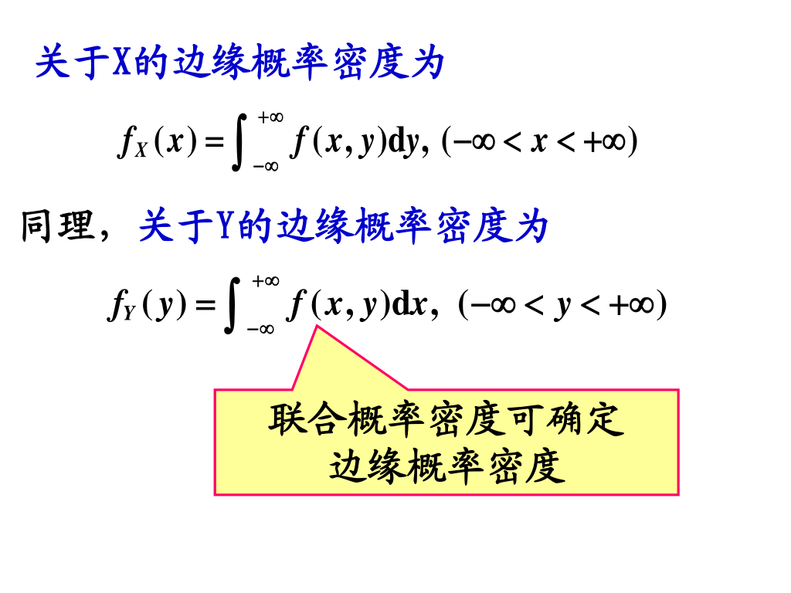
- 二维连续型随机变量的独立性
若 \(f(x, y) = f_X(x)f_Y(y)\)，则 \(X\) 和 \(Y\) 事件相互独立。
- 二维均匀分布和正态分布
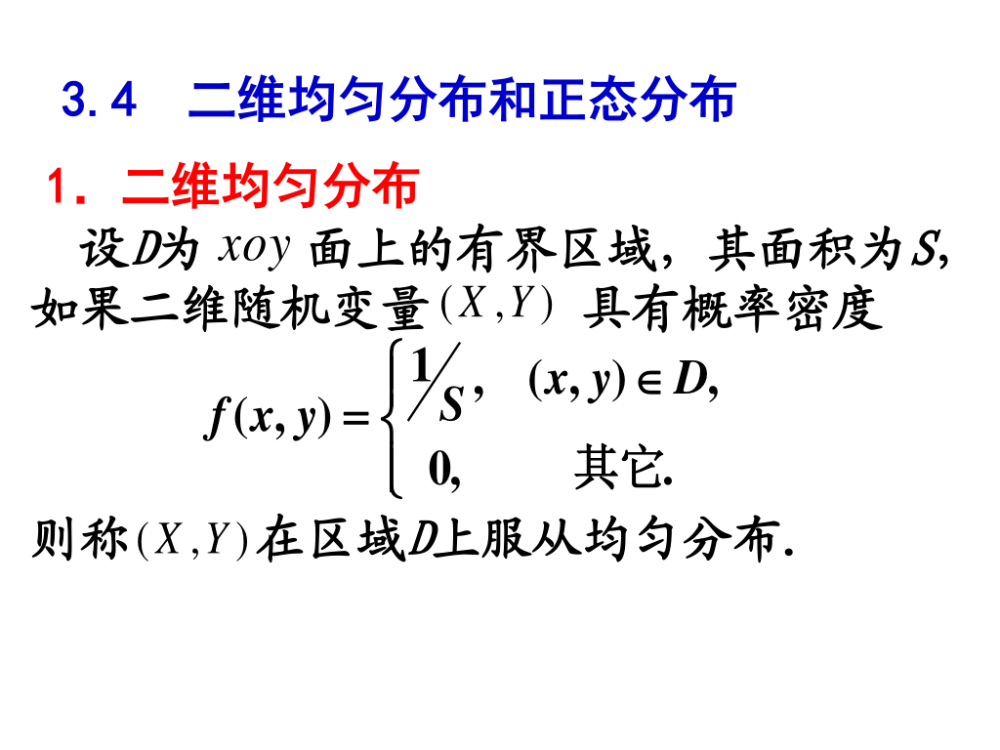

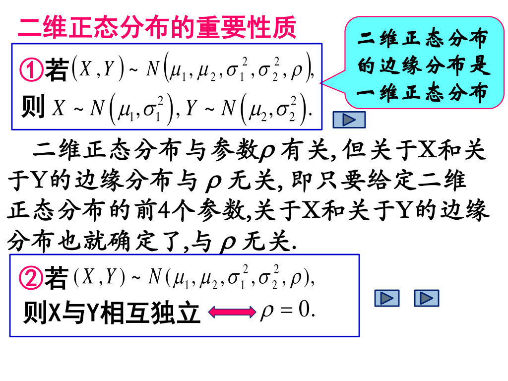
\(\S 3.4\) 条件分布¶
- 离散型随机变量的条件分布
\(P\{X = x_i | Y = y_j\} = \dfrac{P\{X = x_i, Y = y_j\}}{P\{Y = y_j\}}\)
- 连续性随机变量的条件分布
$f(X \le x|Y = y) = f_{X|Y}(x|y) = $
\(F_{X|Y}(x|y) = P(X \le x| Y = y)\) 表示条件 \(Y = y\) 下 \(X\) 的条件分布。
\(f_{X|Y}(x|y) = \dfrac{f(x, y)}{f_Y(y)}\) 表示条件 \(Y = y\) 下 \(X\) 的条件概率密度。
条件分布和条件概率密度满足 \(F_{X|Y}(x|y) = \int_{-\infty}^{x}\dfrac{f(u, y)}{f_Y(y)}du\)


- 例题
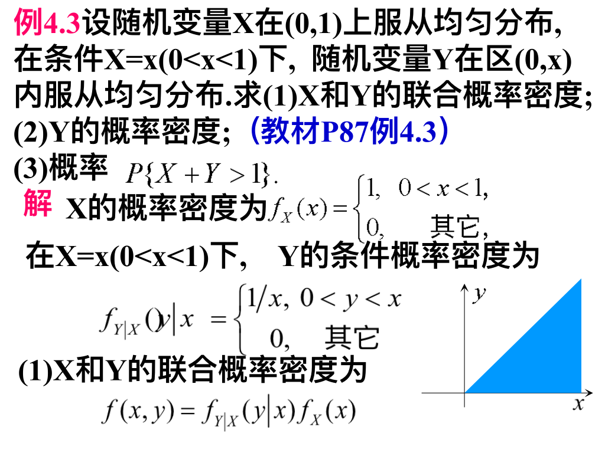

\(\S 3.5\) 二维随机变量的函数的分布¶
本节要多做点题。会用公式法，图形定限法，卷积法。
- 离散型
\(Z = g(x, y)\)，通过列表格法，确定不同 \(x, y\) 数值所对应 \(z\) 的值，然后再求出每个 \(P\{Z = z_k\}\) 概率。
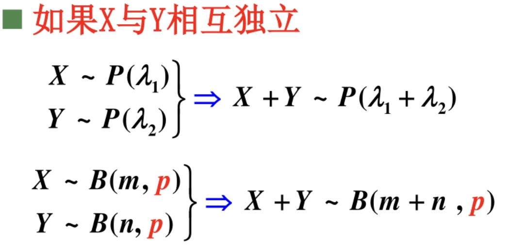
- 连续型

- 三种特殊的连续型情况
\(Z = X + Y\)


- 例题
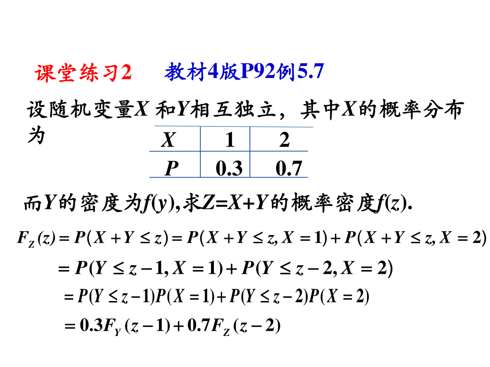
\(\S 3.6\) \(n\) 维随机变量¶
这节真没我什么事qwq。


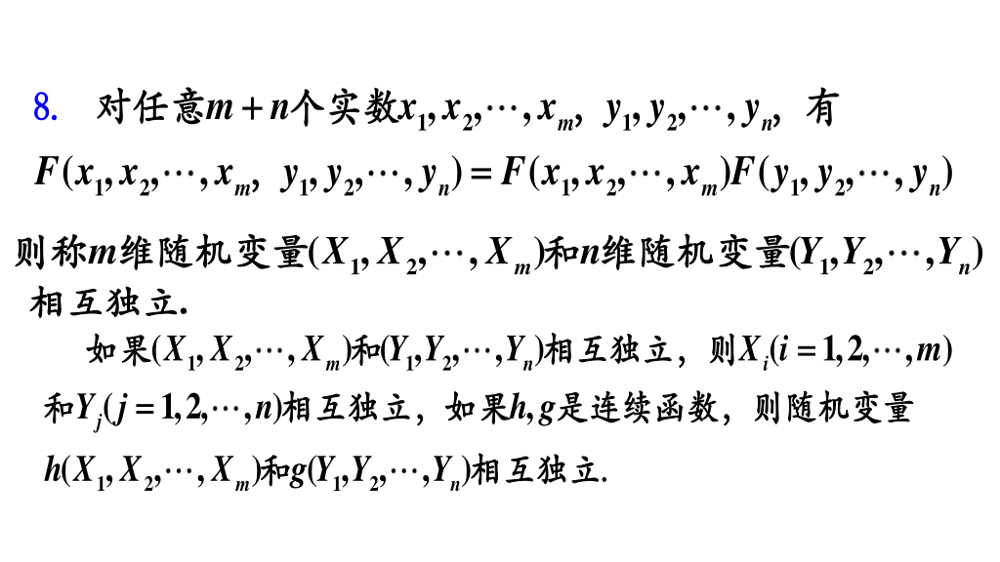
第四章 随机变量数字特征¶
\(\S 4.1\) 数学期望¶


- 常见随机分布的期望
\(X\) 服从 \((0, 1)\) 分布，\(E(X) = p\)。
\(X \sim B(n, p)\) ，\(E(X) = np\)。
\(X \sim P(\lambda)\) ，\(E(X) = \lambda\)。
\(X\) 服从参数为 \(p\) 的几何分布，\(E(X) = \dfrac{1}{p}\)。
\(X\) 服从 \((a, b)\) 上的均匀分布，\(E(X) = \dfrac{a + b}{2}\)。
\(X \sim N(\mu, \sigma^2)\) ，\(E(X) = \mu\)。
\(X\) 服从参数为 \(\lambda\) 的指数分布，\(E(X) = \dfrac{1}{\lambda}\)。
- 随机变量的函数的随即期望


-
数学期望性质
-
\(E(aX + bY + c) = aE(X) + bE(Y) + c\)（\(a, b, c\) 均为常数）
-
设 \(X\)，\(Y\) 相互独立，则有 \(E(XY) = E(X)X(Y)\)。（但是反过来不一定成立，看下面第二个例题）
-
设有随机变量 \(X\) 和 \(Y\)，若 \(E(X^2)\) 和 \(E(Y^2)\) 都存在，则 \([E(XY)]^2 \le E(X^2)E(Y^2)\) 称为 Cauchy-Schwarz 不等式。

-
额外补充

-
例题


\(\S 4.2\) 方差¶
- 方差
若随机变量的 \(E(X - E(X))^2\) 存在，则称它为 \(X\) 的方差，记作 \(D(X)\)，记 \(\sigma(X) = \sqrt{D(X)}\) 为随机变量 \(X\) 的均方差（标准差）。


这个公式非常重要，算 \(E(x^2)\) 或 \(E^2(x)\) 时，要么利用定义，要么用这个公式来转化。同理如果 \(D(x)\) 不好算而 \(E(x^2)\) 和 \(E^2(x)\) 好算，也可以利用这个公式。
重要附录表
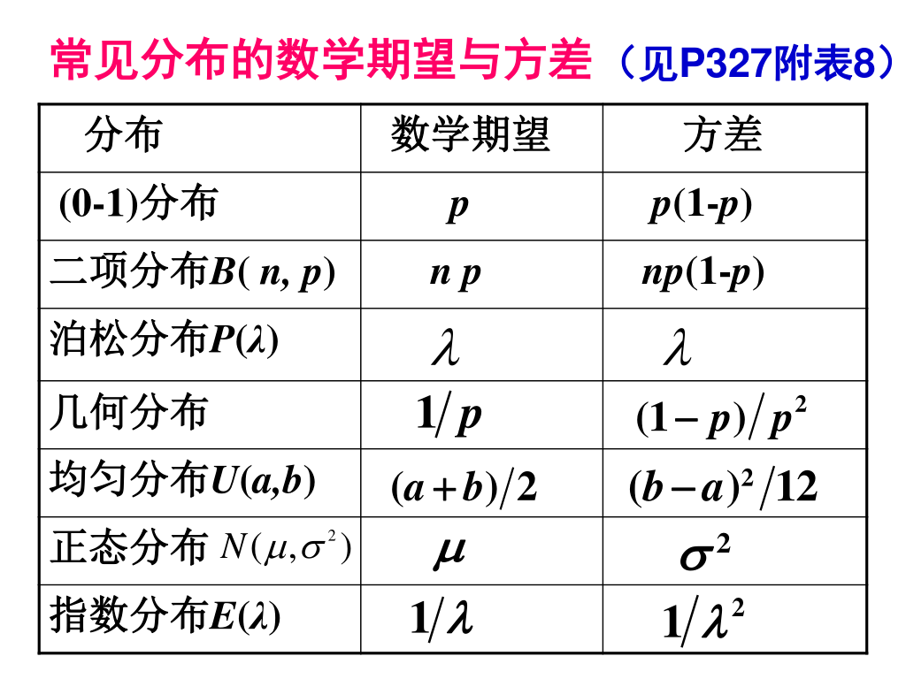
- 方差的性质
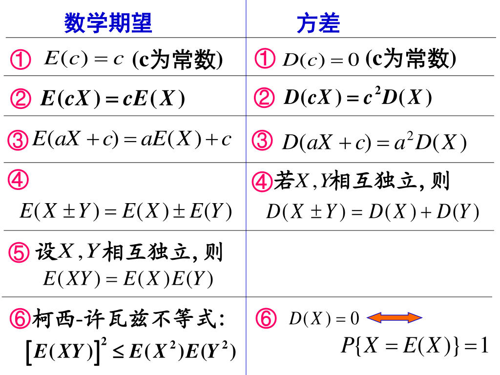

注意，这里方差为 \(0\) 可以表示 \(E(X)\) 为常数的概率为 \(1\)，但是期望为常数的概率是 \(1\) 也不能说明期望一定是常数，在
注2里举了反例。所以不能说 \(X\) 取值相等，只能说几乎处处相等。
- 随机变量的标准化
设 \(X\) 的数学期望 \(E(X) = \mu\)，方差 \(D(X) = \sigma^2 > 0\)，则称 \(X^* = \dfrac{X - \mu}{\sigma}\) 为 \(X\) 的标准化随机变量。标准化随机变量的数学期望是 \(0\)，方差是 \(1\)，即 \(E(X^*) = 0, D(X^*) = 1\)。
- 例题（这些证明都要求掌握）
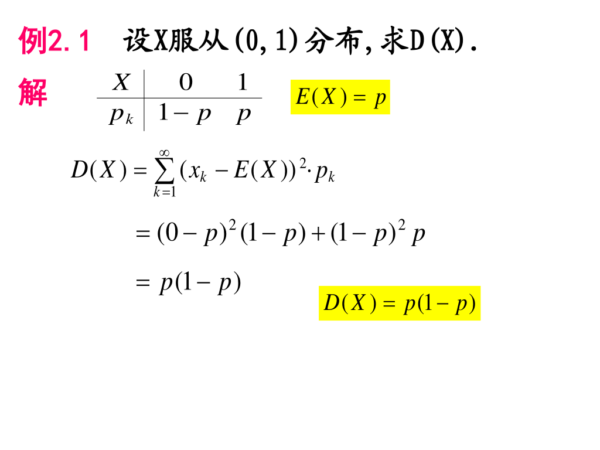

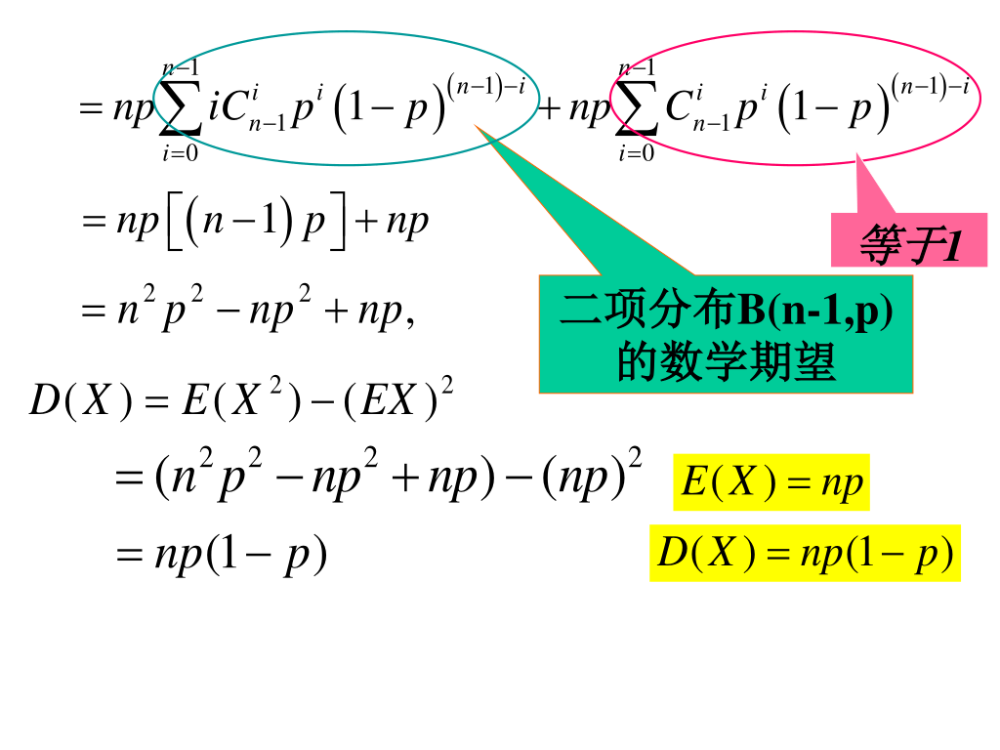


\(\S 4.3\) 协方差与相关系数¶
- 协方差


- 相关系数

\(\S 4.4\) 矩¶
-
原心矩和中心矩
-
协方差矩阵
-
\(n\) 维正态分布
第五章 大数定律及中心极限定理¶
\(\S 5.1\) 切比雪夫不等式¶
\(\S 5.2\) 大数定律¶
\(\S 5.3\) 中心极限定理¶
- 依分布收敛